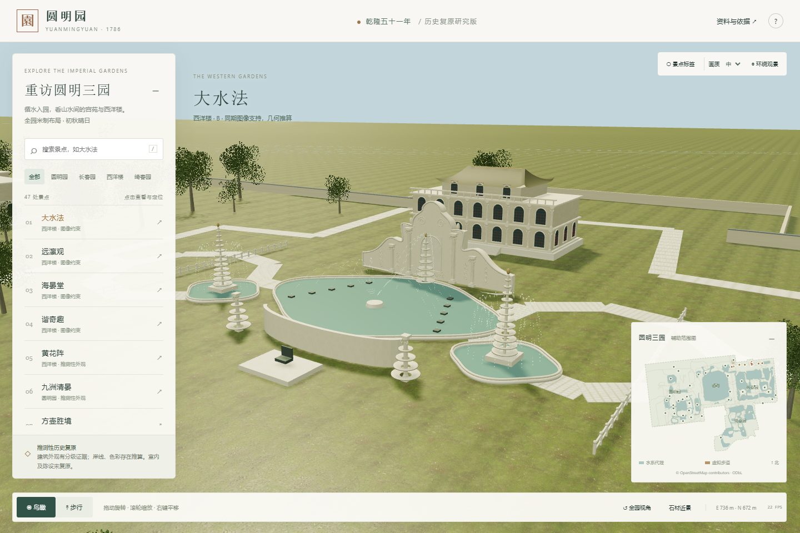
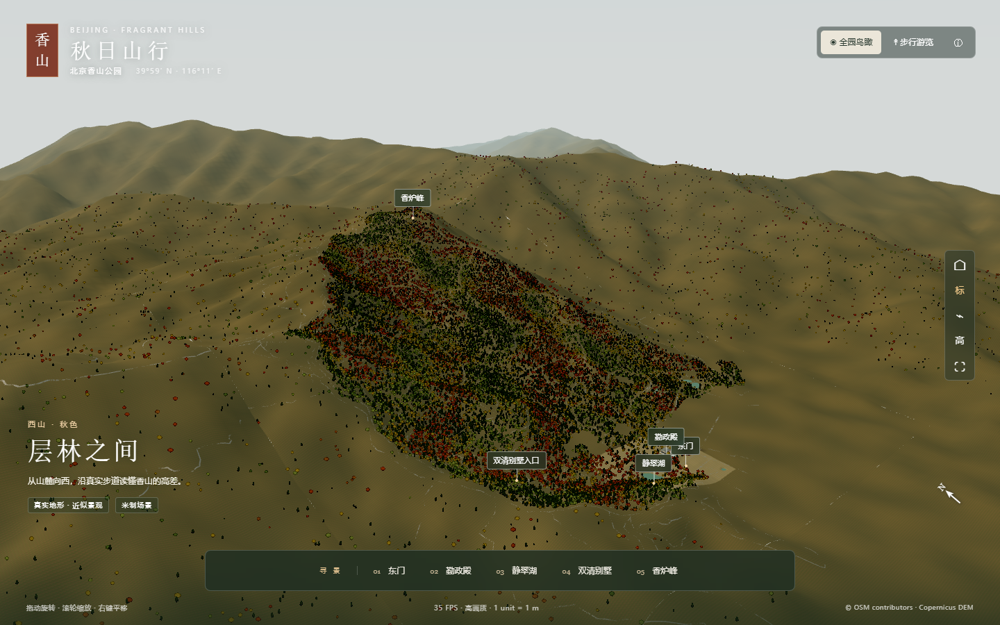
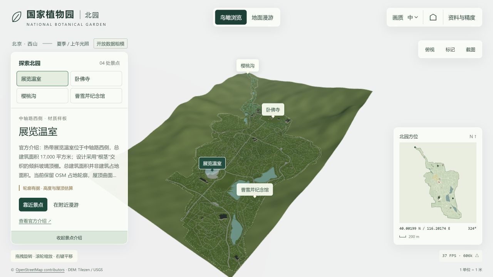

3D
3D中国 · 北京
天坛
祈年殿、皇穹宇与圜丘，沿南北轴线漫游天坛。
开始云游 →EXPLORE IN 3D
按国家、地区探索，在三维场景中走进建筑与山水。
共 11 个景点
拖动旋转、滚轮缩放，也可切换步行模式。
3D中国 · 北京
祈年殿、皇穹宇与圜丘，沿南北轴线漫游天坛。
开始云游 → 3D
3D中国 · 北京
从午门到御花园，鸟瞰宫城或沿中轴步行。
开始云游 → 3D
3D中国 · 北京
环游昆明湖，探访佛香阁、长廊与十七孔桥。
开始云游 →
3D中国 · 北京
游览乾隆时期园林的推测性历史复原，逐项查看证据、近似与缺失。
开始云游 → 3D
3D中国 · 北京
按公开地图漫游园区，查询有来源的场馆与动物分布资料。
开始云游 →
3D中国 · 北京
沿真实地形与步道探索勤政殿、静翠湖和香炉峰，查看场景来源与精度说明。
开始云游 →
3D中国 · 北京
鸟瞰或步行探索北园、温室与湖畔，查看开放地图和地形重建的依据。
开始云游 →真实地图布局与有精度说明的建筑、海岛参考场景。
拖动旋转、滚轮缩放，也可切换步行模式。
没有找到符合条件的景点。